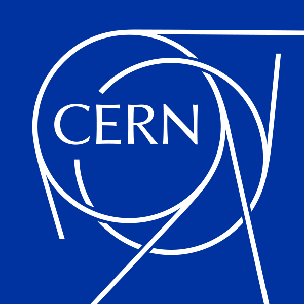
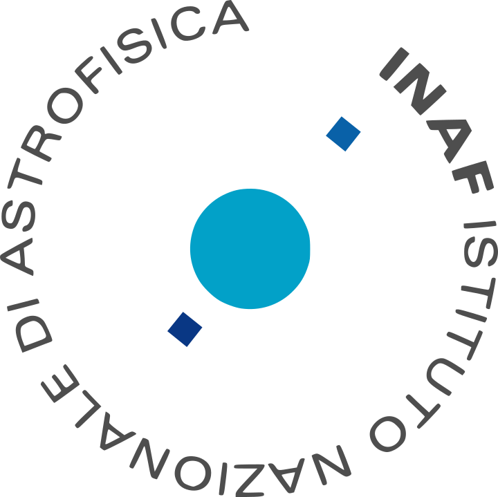
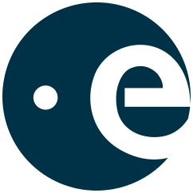
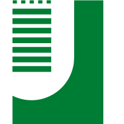
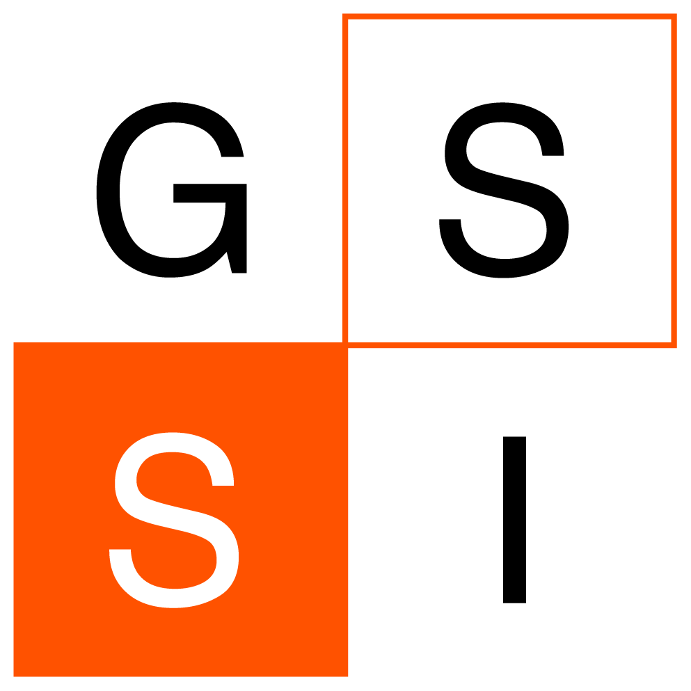
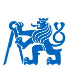

CV
Robotics and instrumentation engineer building autonomous systems for extreme environments, from space hardware to particle-physics detector caverns.
Ingegnere di robotica e strumentazione: costruisco sistemi autonomi per ambienti estremi, dall'hardware spaziale alle caverne dei rivelatori di fisica delle particelle.
ExperienceEsperienza
-

2023 to 2026dal 2023 al 2026
Doctoral Student, EP-DT-EO sectionDottorando, sezione EP-DT-EO
CERN
Geneva, SwitzerlandGinevra, Svizzera
- Designed, built and validated an autonomous aerial robot for 3D mapping and inspection of the ALICE experimental cavern, funded by the EP-R&D programme.
- Embedded real-time control, computer-vision localization, data acquisition and analysis, CAD design, 3D printing and custom PCBs.
- Test campaigns in the LHC cavern during technical stops and magnet ramp-ups, in collaboration with the ALICE Run Coordination.
- Supervised 5+ Bachelor's and Master's students; responsible for technical decisions, procurement and budget of the project.
- Progettazione, realizzazione e validazione di un robot aereo autonomo per la mappatura 3D e l'ispezione della caverna di ALICE, finanziato dal programma EP-R&D.
- Controllo embedded in tempo reale, localizzazione con visione artificiale, acquisizione e analisi dati, progettazione CAD, stampa 3D e PCB su misura.
- Campagne di test nella caverna dell'LHC durante gli stop tecnici e le rampe del magnete, in collaborazione con la Run Coordination di ALICE.
- Relatore di oltre 5 studenti di triennale e magistrale; responsabile delle decisioni tecniche, degli acquisti e del budget del progetto.
-


Mar 2023 to Oct 2023da mar 2023 a ott 2023
Spacecraft Payload System Engineer, ESA PLATO missionmissione ESA PLATO
INAF, National Institute for AstrophysicsINAF, Istituto Nazionale di Astrofisica
Rome, ItalyRoma, Italia
- Managed the MBSE model of the PLATO cameras in the Camera System Engineering team, with full requirements traceability.
- Tracked requirement compliance and resolved technical deviations during camera integration and calibration.
- Authored requirement specifications and interface control documents for formal reviews with ESA.
- Gestione del modello MBSE delle camere di PLATO nel team di Camera System Engineering, con piena tracciabilità dei requisiti.
- Verifica della conformità ai requisiti e risoluzione delle deviazioni durante integrazione e calibrazione delle camere.
- Stesura di specifiche dei requisiti e documenti di interfaccia per le review formali con l'ESA.
-
Jun 2022 to Nov 2022da giu 2022 a nov 2022
Graduate Robotics Engineer
CERN
Geneva, SwitzerlandGinevra, Svizzera
- Robust control of aerial robots for the CERN experimental caverns, in the EP-R&D programme with the School of Aerospace Engineering, Rome.
- Test campaign on the effect of high magnetic fields on DC motor performance, with the EP-DT-DI section.
- Supervised a Bachelor student on camera placement for the motion-capture localization system.
- Contributed to a human motion-capture study with the University of Sheffield, for gesture recognition and radiation dose estimation.
- Controllo robusto di robot aerei per le caverne sperimentali del CERN, nel programma EP-R&D con la Scuola di Ingegneria Aerospaziale di Roma.
- Campagna di test sull'effetto di campi magnetici intensi sulle prestazioni dei motori DC, con la sezione EP-DT-DI.
- Relatore di uno studente triennale sul posizionamento delle camere del sistema di motion capture.
- Contributo a uno studio di motion capture umano con l'Università di Sheffield, per il riconoscimento dei gesti e la stima della dose di radiazione.
-
Nov 2021 to Dec 2021da nov 2021 a dic 2021
MSc Thesis Internship in RoboticsTirocinio di tesi magistrale in robotica
CERN
Geneva, SwitzerlandGinevra, Svizzera
- Feasibility study of a lightweight blimp robot for the experimental caverns of the CERN FCC.
- Nonlinear dynamic model of the airship and simulation of the magnetic disturbances on its motors from a future FCC detector.
- Nonlinear trajectory-tracking controllers, validated in flight with a motion-capture system against simulation.
- Studio di fattibilità di un dirigibile robotico leggero per le caverne sperimentali del FCC al CERN.
- Modello dinamico non lineare del dirigibile e simulazione dei disturbi magnetici sui motori dovuti a un futuro rivelatore del FCC.
- Controllori non lineari di inseguimento della traiettoria, validati in volo con un sistema di motion capture e confrontati con la simulazione.
EducationFormazione
-

2023 to 2026dal 2023 al 2026
PhD in Astronomy, Astrophysics and Space Science (XXXIX cycle) Dottorato in Astronomy, Astrophysics and Space Science (XXXIX ciclo)
University of Rome Tor VergataUniversità di Roma Tor Vergata
Research carried out at CERN, GenevaRicerca svolta al CERN, Ginevra
-

2020 to 2021dal 2020 al 2021
MSc in Space and Astronautical Engineering Laurea magistrale in Ingegneria Spaziale e Astronautica
Sapienza University of RomeSapienza Università di Roma
Rome, ItalyRoma, Italia
110/110 cum laude.
Thesis: Dynamic interaction and control of an indoor blimp inside the CERN FCC-hh magnetic environment.
110/110 e lode.
Tesi: Dynamic interaction and control of an indoor blimp inside the CERN FCC-hh magnetic environment.
-
2016 to 2019dal 2016 al 2019
BSc in Aerospace Engineering Laurea triennale in Ingegneria Aerospaziale
Sapienza University of RomeSapienza Università di Roma
Rome, ItalyRoma, Italia
110/110 cum laude.
Thesis: Doses of radiation from solar protons absorbed for a trip to Mars.
110/110 e lode.
Tesi: Doses of radiation from solar protons absorbed for a trip to Mars.
AwardsPremi
- 2023 "Antonio Ventura" Scholarship, best Master's thesis in Space and Astronautical Engineering at Sapienza, Noi Sapienza Foundation Borsa "Antonio Ventura", miglior tesi magistrale in Ingegneria Spaziale e Astronautica alla Sapienza, Fondazione Noi Sapienza
- 2023 "Excellent Graduate" 2020/2021 in Space and Astronautical Engineering, 10th Graduate Day, Noi Sapienza Foundation "Laureato eccellente" 2020/2021 in Ingegneria Spaziale e Astronautica, 10° Graduate Day, Fondazione Noi Sapienza
Schools and trainingScuole e formazione
-

May 2026mag 2026
SpaceRaise 2026, Robotics for Space
Gran Sasso Science Institute
-
Feb 2025feb 2025
Robotic Vision Summer School
The Australian National University
-

Jul 2024lug 2024
IEEE RAS Summer School on Multi-Robot Systems
Czech Technical University in Prague
-
Mar 2024mar 2024
Clean Space Training Course 2024
European Space Agency (ESA)Agenzia Spaziale Europea (ESA)
-

Feb 2023feb 2023
Southern Hemisphere Space Studies Program (SH-SSP23)
International Space University and University of South Australia, Adelaide
SkillsCompetenze
- Robotics and control
- Guidance, navigation and control, cascade PID, motion capture, ArUco localization, UAVs and blimps
- Electronics and embedded
- Arduino, Raspberry Pi, ESP32, KiCad PCB design, Hall-effect magnetometry, Timepix3
- Simulation and design
- FEMM, CST, CATIA, Unreal Engine, MBSE
- Programming
- MATLAB and Simulink, Python, C++, Git, LaTeX
- Robotica e controllo
- Guida, navigazione e controllo, PID in cascata, motion capture, localizzazione ArUco, droni e dirigibili
- Elettronica e sistemi embedded
- Arduino, Raspberry Pi, ESP32, progettazione PCB in KiCad, magnetometria a effetto Hall, Timepix3
- Simulazione e progettazione
- FEMM, CST, CATIA, Unreal Engine, MBSE
- Programmazione
- MATLAB e Simulink, Python, C++, Git, LaTeX
LanguagesLingue
- Italian
- Native
- English
- Professional working proficiency
- French
- Intermediate
- Spanish
- Basic
- Italiano
- Madrelingua
- Inglese
- Competenza professionale
- Francese
- Intermedio
- Spagnolo
- Base